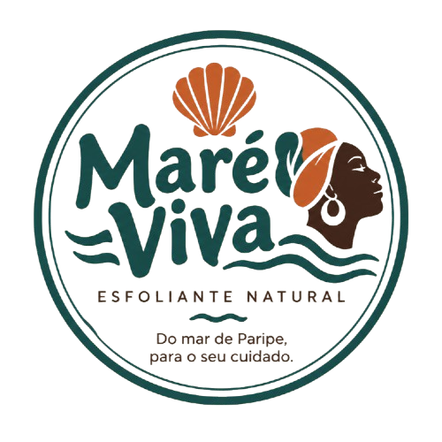
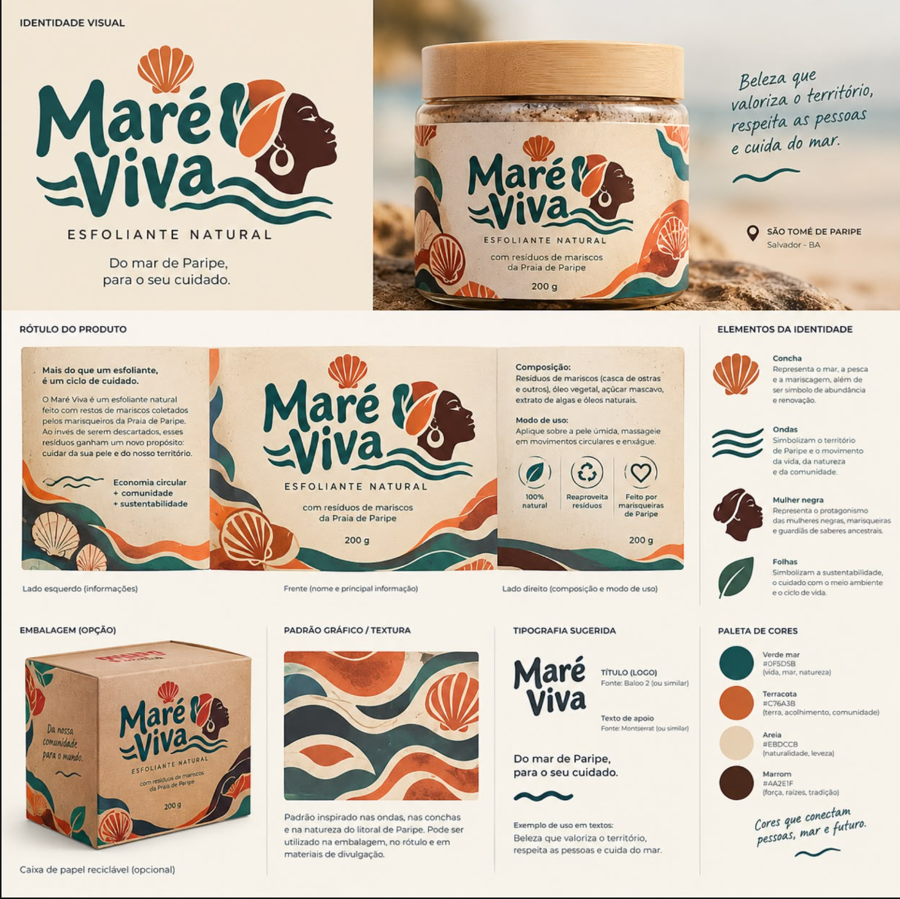

Origem e seleção
Neste protótipo, o insumo calcário foi adquirido de fornecedor comercial. A coleta de conchas diretamente em São Tomé de Paripe foi descartada por causa da contaminação relatada no artigo.
Maré Viva propõe um novo destino para resíduos da mariscagem. Neste protótipo, o insumo calcário foi adquirido de um fornecedor comercial. Conheça a proposta, a escolha dos materiais e cada etapa do esfoliante.
Conheça o processo ↓
A Maré Viva dialoga com o artigo “Territórios da Amefricanidade: mulheres negras em movimento — do 2 de Julho ao Julho das Pretas” ao aproximar território, protagonismo das mulheres negras e cuidado. A ideia de reaproveitar resíduos da mariscagem aponta para uma possibilidade de reduzir descartes e valorizar saberes e atividades locais.
As conchas e as ondas da identidade visual lembram a relação com o mar. A referência às marisqueiras reconhece quem conhece, trabalha e cria nesse território. Cascas de mariscos que muitas vezes acabam descartadas entre a fauna e a flora podem inspirar iniciativas de reaproveitamento e oportunidades para o comércio local.
Assista ao tutorial da equipe e acompanhe o preparo do protótipo com o insumo calcário de fornecedor comercial. O vídeo pode ser atualizado quando a produção estiver pronta.
Uma experiência feita para compartilhar conhecimento, valorizar o trabalho local e mostrar cada etapa com transparência.
Quando estiver pronto, coloquem o arquivo video-esfoliante.mp4 na pasta do site.
Um resumo visual do processo. Ajustem os detalhes desta lista para corresponder ao método real demonstrado no vídeo da equipe.
Neste protótipo, o insumo calcário foi adquirido de fornecedor comercial. A coleta de conchas diretamente em São Tomé de Paripe foi descartada por causa da contaminação relatada no artigo.
O insumo comercial passa pelo preparo definido pela equipe. Registrem aqui os procedimentos realmente adotados para este protótipo.
O insumo calcário preparado é processado até atingir a textura planejada para a formulação, conforme o método mostrado no tutorial.
A matéria-prima é combinada aos demais ingredientes da receita do grupo, como óleo vegetal e açúcar mascavo.
O protótipo é acondicionado e identificado com a composição e as orientações de uso definidas pela equipe.
O QR code da embalagem leva a esta página, reunindo o tutorial, as etapas e a história por trás da Maré Viva.
Verde-mar, terracota, areia e marrom formam a paleta da marca. As ondas falam do movimento e do litoral; a concha, da abundância do mar; e a figura da mulher negra, do protagonismo das marisqueiras e dos saberes ancestrais.
O conceito da embalagem propõe reaproveitar resíduos da mariscagem e valorizar a comunidade que vive essa relação com o mar. Neste protótipo, porém, o insumo calcário veio de fornecedor comercial: nenhuma concha foi coletada na praia contaminada.

Uma proposta de reaproveitamento, memória e cuidado ligada ao território e às pessoas que vivem do mar.